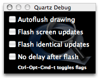
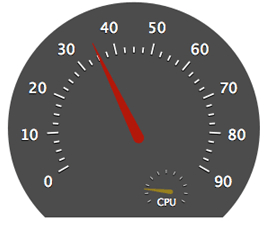
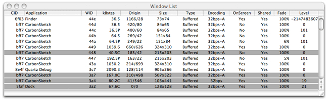

Q: Q: How do I use QuartzDebug to debug graphics issues?A: QuartzDebug is a debugging interface for the Quartz graphics system with several powerful tools to help you identify a number of graphics display and performance problems. The Quartz Debug application is located in: /Developer/Applications/Performance Tools/ Main Quartz Debug options windowFigure 1: Quartz Debug main window.  Upon launch, the QuartzDebug options window Figure 1 appears. It contains four debugging checkboxes (all initially deselected). The "Autoflush drawing" checkbox flushes the contents of a CoreGraphics graphics context after each drawing operation, rather than wait for the CGContextFlush(). This is useful for examining every single drawing operation. When "Flash screen updates" is selected, regions of the screen that are about to be updated are painted yellow, followed by a brief pause, followed by the actual screen update. This allows you to see screen updates as they occur. The pause allows you to see the region in yellow; without it, the screen would be updated immediately, possibly faster than you can perceive it. To turn off the pause, select the "No delay after flash option." When "Flash identical updates (red)" is selected, regions of the screen that are about to be updated, but are the same as the content already present in the window backing store, are painted red. The red is followed by a brief pause, followed by the actual screen update. This allows you to see which regions of the window are being drawing redundantly as the content is already present in the window backing store. To turn off the pause, select the "No delay after flash option." When "No delay after flash option." is selected, "Flash identical updates", and "Flash screen updates" will not pause after the flashes.
Back to Top Tools Menu OptionsQuartz ExtremeThe "Disable/Enable Quartz Extreme" menu option allows you to disable or re-enable Quartz Extreme in the system. See the Quartz Extreme page for more information. If grey, hardware does not support Quartz Extreme. If green, Quartz Extreme is enabled. If red, Quartz Extreme is disabled. This setting takes effect immediately. This setting is not sticky across reboots. Back to Top The Frame MeterFigure 2: The Frame Meter  The "Show/Hide Frame Meter" (shown in Figure 2) menu option displays or hides the performance frame meter as shown in Figure 3. The frame meter displays the number of screen updates per second. It also includes a mini cpu frame meter that displays the cpu usage. It is a transparent window, that can moved around by click-dragging from any part of the window. Back to Top User Interface Resolution"Show User Interface Resolution" Allows the user to set the user interface scale factor. Applications have to be restarted. Setting is sticky across reboots. Back to Top Beam Sync Tools"Show Beam Sync Tools" Allows the user to see the affects of Coalesced Updates on their application. Disable Beam Synchronization: Disables all beam syncing in the system, including the Coalesced Update feature. You may see visual tearing, and you may see increased performance because your drawing calls will no longer block waiting for the previous flush to complete. Use this mode for benchmark testing to see what the total throughput of your code is (disregarding the the display flushing). There is currently no way to disable just the Coalesced Update feature only. Automatic Beam Synchronization: This is the default for 10.4. In this mode, beam syncing is enabled for window geometry changes (also true in 10.3) and the Coalesced Update feature is also enabled. The latter is new to 10.4 and will result in the window server coalescing display updates across applications into a single update to the display waiting for a vertical blank of the display. This is tied to the display refresh rate and is also applicable to LCD monitors (which really update at 60Hz). This results in better system performance, but can have side-effects to applications that attempt to flush faster than the refresh of the display. Note that only mach-o applications linked on 10.4 will initiate coalesced updates. CFM and apps built pre-Tiger will not initiate a coalesced update, but if another application has initiated a coalesced update for a VBL, then the original app's update will also be coalesced. Force Beam Synchronization: This will force coalescing of updates across all applications. Developers can use this to check the performance impact of the feature without waiting to link their application on Tiger. Right now, the first time the app tries to flush faster than the display refresh rate or ends up spending more that 50% of it's time waiting for the vbl will have a message logged to /var/log/windowserver.log. The message is of the format : "Application "SuchAndSuch" is being throttled by update coalescing." This message will only be output once per application. Developers should monitor this log to check to see if their application is being impacted by coalesced updates or not.
Back to Top The Window ListTo understand the impact of buffered windows on the memory footprint of your application, you can examine the window list. When you Choose Tools > Show Window List, a window (similar to that shown in Figure 3) that contains a list the systemwide windows appears. The list identifies the owner of each window and the memory the window occupies. The list automatically updates as windows are added and removed. Table Table 1 describes the data in each column of the window list. Windows colored in green are hardware accelerated using Quartz 2D Extreme. Windows colored in grey are compressed because they are inactive. The list is updated every second. This can be modified in the Preferences. The "Refresh Windows List Now" refreshes the window list available from the Options Window. Figure 3: A Snapshot of the system-wide window list.  Table 1: Description of the columns in the Window List | QuartzDebug window list columns | Column Description |
|---|
| CID | The connection ID of the window. Used internally by the window server. Typically, the connection ID is the same for all windows owned by a process. | | Application | The name of the application that owns the window. | | WID | The ID of the window itself. Used internally by the window server. | | kBytes | The amount of memory occupied by the window buffer and other large data structures. Specified in kilobytes. The letter I is appended to the size if the buffer is invalid (in need of an update). The letter C is appended if the window has been automatically been compressed by the window server. | | Origin | Screen-relative origin of the window (in pixels). | | Size | Size of the window (in pixels). | | Type | Buffered windows are buffered in shared memory. All graphics operations are recorded in the backing buffer and drawn to screen by the window server as necessary. Only the portions of a Retained window that are obscured by other windows are saved in the buffer. This results in some memory savings, but disables translucency. Graphics operations in Non-Retained windows are not recorded at all. | | Encoding | Depth of the window's buffer (the number of bits per pixel). The letters -A are appended if the window buffer has an alpha channel. Note that the window buffer includes the window's title bar and frame (or, in Carbon terms, "structure region"). | | On Screen | Whether the window is visible and on screen or offscreen and hidden from view. | | Shared | Whether the window is shared or not. Shared windows can be manipulated by multiple applications. Non-shared windows are only modifiable by the application specified in the Application column. | | Fade | Opacity of the window. Opacity is separate from the window's alpha channel. Ranges from 0% to 100%, where 0% indicates a completely transparent window; 100% indicates a completely opaque window. | | Level | The window level. Windows at higher levels can never be placed visually below windows at lower levels. Values from LONG_MIN + 1 to LONG_MAX - 16 are supported. |
Back to Top Document Revision History| Date | Notes |
|---|
| 2006-01-12 | Updated for 10.4 | | 2003-02-25 | Explains how to use QuartzDebug to debug graphics issues. |
Posted: 2006-01-12
|